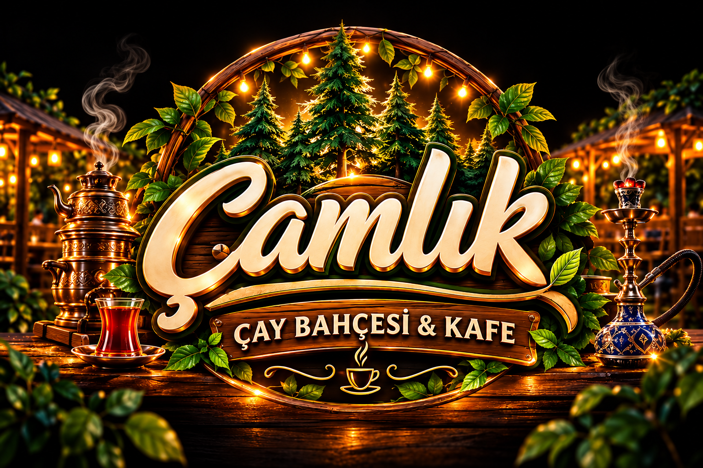

ÇAMLIK'TA BİR MOLA
İyi sohbetin
yeri başka.
Semaverden yükselen çay kokusu, masaya gelen lezzetler ve sevdiklerinizle geçen zaman… Çamlık'ta küçük bir mola, günün en güzel anına dönüşür.
Bizi Instagram'da takip edin ↗Çamların gölgesinde, sıcacık sohbetlerin yanında.
Sevdiğiniz lezzetler ve keyifli anlar burada buluşuyor.

Semaverden yükselen çay kokusu, masaya gelen lezzetler ve sevdiklerinizle geçen zaman… Çamlık'ta küçük bir mola, günün en güzel anına dönüşür.
Bizi Instagram'da takip edin ↗Masadan kalkmadan bize ulaşın.